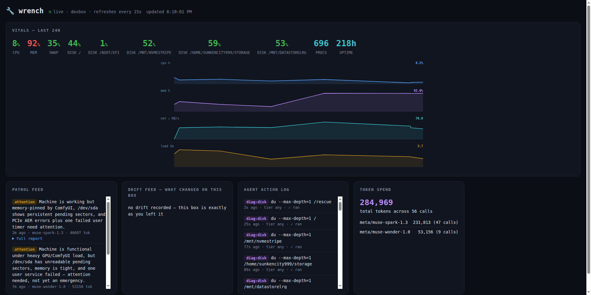

Disks fill silently. Services die at 3 a.m. Configs drift. When something finally breaks, you reconstruct history from scraps. wrench is an AI sysadmin that lives on the box — in its own words: "I read the logs so you don't have to. I remember what changed. And with your permission, I fix problems before you ever see them."
⚡ powered by Meta muse models (muse-spark-1.3 · muse-wonder-1.0) —
OpenAI / Anthropic / Ollama / LM Studio / LiteLLM swappable
runs on Linux · macOS · Windows — read-only by default ·
MIT · local SQLite (support matrix)
A disk creeps from 60% to 94% over three months. Swap quietly swells. A fan slows. Nothing pages you — classic tools show you right now and remember nothing.
An upgrade swaps a config. A port opens nobody remembers. When it breaks, you do archaeology: logs, shell history, vibes. The timeline you need was never recorded.
Monitoring stacks draw the line going up — after you build dashboards and tune alerts. Then you go find out why. A graph can scream; it can't open the journal and look.
CPU, memory, disks, network, processes, Docker, GPU — sampled into a local SQLite time-series until "normal" is a learned baseline, not a guess. Spikes are flagged by z-score, so you see what's weird, not what's loud.
Ports, services, packages, users, and scheduled jobs get snapshotted and diffed on every scan — in English. Not a raw diff: "port opened: tcp/8081 (python3)", "package upgraded: openssl". The history exists before you need it.
Ask "why is my disk filling up?" and an agent powered by Meta's muse models goes and finds out with read-only diagnostic tools — grounded in your telemetry and logs, citing evidence, handing privileged commands to you instead of running them.
On a schedule, wrench reviews sensors, anomalies, and drift; investigates; and files a report you'll actually read: ok / attention / critical, findings with evidence, exact fixes. Terminal, styled HTML, and dashboard — same facts everywhere.
wrench fixxer finds what's correctable — pending updates, orphaned packages,
fat logs, bloated caches, failed services — and applies the fixes you pick, verifying
each one. Every command comes from a hand-written catalog; the model explains and
recommends, it never writes the shell. Consent-gated auto mode for self-healing boxes.
wrench cve checks your installed packages against OSV.dev and your
OS/kernel/runtimes against endoflife.date — free public APIs, no keys. Known CVEs
land in patrols and the dashboard; fixxer can apply targeted security
updates for exactly the affected packages. Cached locally; patrols never fail offline.
A simulated terminal with real (sanitized) output from the dev box. Click the steps — nothing runs on your machine.
A real patrol from wrench's first day on its dev box (sanitized report in the repo's examples/):
/usr/bin/mail missing) — every disk warning had been shouted into the void.Recommendations came as exact commands: back up the at-risk mount now,
sudo smartctl -a /dev/sda, install mailutils so SMART alerts reach a human.
The machine had been asking for help every thirty minutes with the alarm wire cut. A metrics dashboard shows a line. A patrol says: the disk is dying, the alarm was broken, here's what to do about it.
$ wrench patrol wrench · homelab · tier: suggest · brain: muse-spark-1.3 collecting cpu/mem/disk/net/services/journals… done (6.2s, 312 metrics) anomaly disk.write /srv/media 196 MB/s z=5.1 (baseline 19 ± 8 MB/s) drift /etc/fstab changed 2h ago — new rclone mount on /srv/media drift rclone 1.65.2 → 1.66.0 (unattended-upgrades, 02:14) services 18/19 healthy · syncthing.service flapping (4 restarts / 10m) likely cause: syncthing is rescanning 1.2 TB after the mount moved under it recommended fix: pause syncthing folder 'media' 20m, remount, resume, verify dry-run only — no changes made. apply: wrench patrol --tier repair patrol done in 8.4s · full report: wrench web → http://127.0.0.1:8787
wrench web — live vitals, 24h timelines, patrol + drift + security-intel
feeds, the agent's action log, and a token-spend widget. All from one SQLite file — plus a
live chat with the agent (the 🔧 bubble, bottom-right — like the one on this page,
except real) and keyboard shortcuts (? to see them, there and here).

Patrols on demand or on a schedule, collecting telemetry and a fresh drift snapshot without changing anything.
Compares the present against learned baselines and last-known state, separating real anomalies from background noise.
Investigates with read-only, allowlisted diagnostics; names a fix in plain English and stops there until your policy tier says otherwise.
A tidy terminal report now; the dark web dashboard and styled HTML reports when you want the history.
An agent that can touch your system needs a leash you control. wrench's whole
permission model is one line of config. Mutations are no-shell, allowlisted, and logged —
and a forbidden-pattern list blocks the scary stuff at every tier. fixxer
auto mode adds its own locks: an explicit consent ceremony, safe-tier default scope, and a
per-action audit log with rollback hints.
observelook, never touch, never even suggest commandssuggestdefault — diagnose and propose exact fixes; never executesrepairallowlisted fixes only, each one confirmed by youautonomousallowlisted chores unattended — explicit opt-in, fully loggedcurl -fsSL https://raw.githubusercontent.com/sunkencity999/wrench/main/scripts/install.sh | bash # or, with pipx: pipx install git+https://github.com/sunkencity999/wrench wrench init && wrench doctor && wrench patrol wrench install-service # systemd user timer, patrols every 15 min
# needs python 3.10+ (brew install python) curl -fsSL https://raw.githubusercontent.com/sunkencity999/wrench/main/scripts/install.sh | bash wrench init && wrench doctor && wrench patrol wrench install-service # launchd user agent, patrols every 15 min
# PowerShell — needs python 3.10+ on PATH irm https://raw.githubusercontent.com/sunkencity999/wrench/main/scripts/install.ps1 | iex wrench init ; wrench doctor ; wrench patrol wrench install-service # Scheduled Task, patrols every 15 min
wrench init opens a provider menu — Meta muse models by default
(press enter), or a guided fully-local setup via Ollama:
wrench detects your RAM / GPU, recommends a tool-calling model that fits, installs and pulls
with your consent, then proves it with a live tool-calling smoke test. Private + free.
Enterprise shop? Azure OpenAI / AI Foundry is a first-class provider too —
both classic deployment endpoints and Foundry serverless, native api-key auth
(wrench init -p azure).
Linux is tested end-to-end on real hardware; macOS/Windows branches are implemented + unit-tested, pending native smoke tests — full support matrix. No API key? Sensors, drift, and the dashboard still work — or go all-local with Ollama.